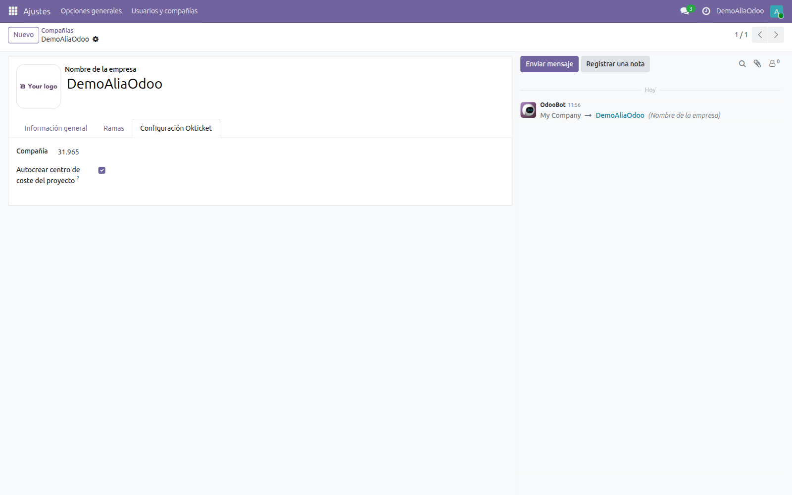
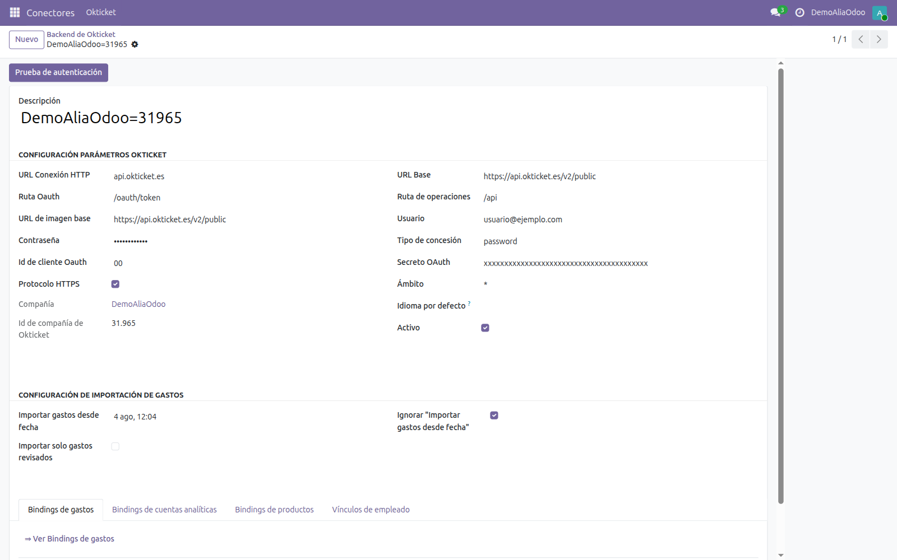
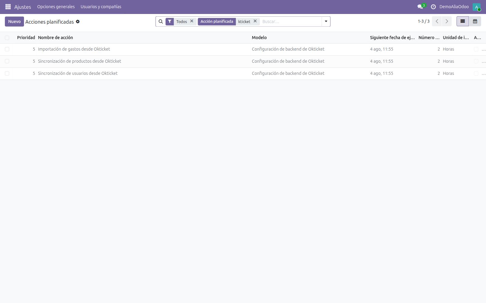
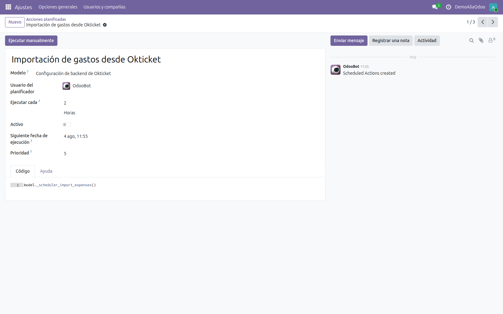
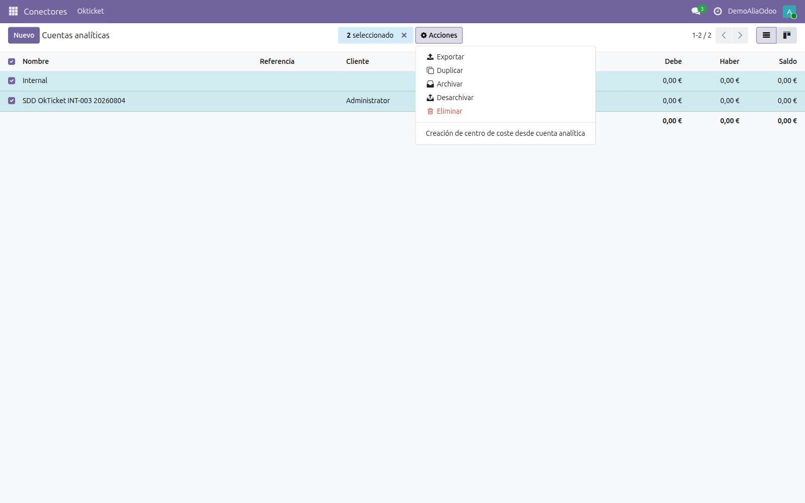
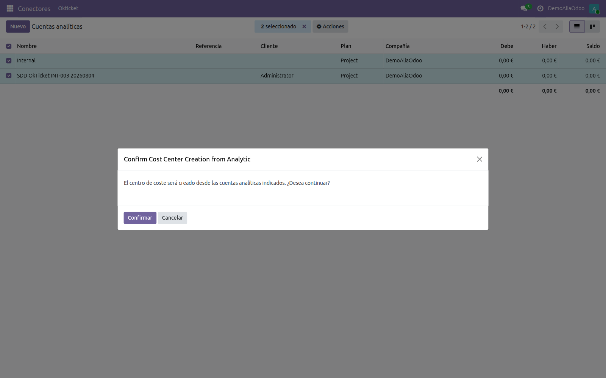
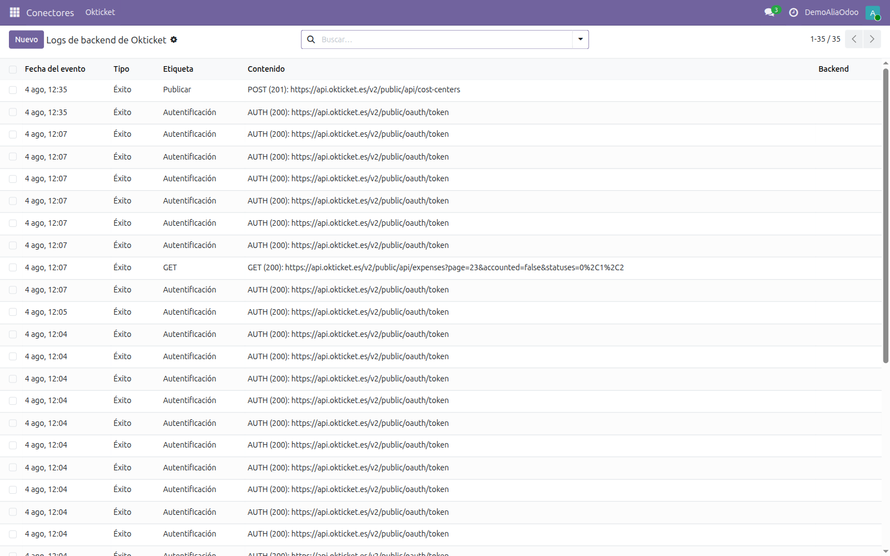

Manual técnico
Conector OkTicket para Odoo 19
Instalación, dependencias, configuración del conector y planificación de las sincronizaciones.
Manual técnico
Instalación, dependencias, configuración del conector y planificación de las sincronizaciones.
El conector sincroniza OkTicket → Odoo los gastos que los empleados registran desde la aplicación móvil, junto con sus usuarios y el catálogo de categorías. En sentido inverso, Odoo → OkTicket, publica los centros de coste creados a partir de cuentas analíticas.
Está construido sobre el framework connector de la OCA: cada entidad de OkTicket tiene en Odoo un modelo binding que guarda la correspondencia entre el registro local y su identificador remoto.
| Módulo | Qué aporta | Binding |
|---|---|---|
okticket_connector | Base del conector: backend, cliente HTTP, log de eventos e importación de gastos. | okticket.hr.expense |
okticket_connector_user_synchronization | Importa los usuarios de OkTicket y los empareja con empleados por correo electrónico. | okticket.hr.employee |
okticket_connector_product_synchronization | Importa el árbol de categorías de OkTicket como productos de gasto. | okticket.product.template |
okticket_connector_cost_center | Publica cuentas analíticas de Odoo como centros de coste en OkTicket. | okticket.account.analytic.account |
okticket_hr_timesheet_cost_center | Evita que el proyecto que Odoo crea automáticamente con cada compañía dispare una sincronización espuria. Opcional. | — |
hr.expense.sheet fue eliminado junto con el
flujo de gastos basado en hojas). Los módulos que dependían de ese modelo
(okticket_connector_hr_expense_sheet, …_grouping y
okticket_hr_expense_reporting) no forman parte de esta versión. Los gastos importados
quedan como gastos individuales en estado Borrador.
api.okticket.es (o
apipre.okticket.es en preproducción). Si Odoo corre tras un proxy con lista blanca,
hay que autorizar ese host.OkTicket es un producto español y devuelve los tipos de IVA españoles. Conviene que la
compañía tenga instalada la localización española (l10n_es) con su plan contable
aplicado, y que existan los impuestos de compra al 0 %, 4 %, 10 % y 21 %, además de un
diario de compras. Sin ellos, los gastos importados recaen siempre en el impuesto por defecto
del producto.
El repositorio mantiene una rama por versión de Odoo. Para 19.0:
git clone --branch 19.0 https://github.com/Alialabs/connector-okticket.gitAmbos repositorios en su rama 19.0:
| Repositorio | Módulos que aporta |
|---|---|
OCA/connector | connector, component, component_event |
OCA/queue | queue_job |
hr, hr_expense, hr_timesheet, sale_expense,
product, uom, analytic y, para el módulo de centros de
coste, project.
Una sola, declarada en requirements.txt: cachetools==3.1.1.
odoo/custom/dependencies/pip.txt, no instalada
en caliente dentro del contenedor.
Con las rutas ya en addons_path y el servicio reiniciado, los módulos aparecen
buscando okticket en la lista de aplicaciones.
application: True, así que hay que quitar el filtro
«Aplicaciones» del buscador para que aparezcan.

Qué instalar según el alcance:
okticket_connector — obligatorio.okticket_connector_user_synchronization y
okticket_connector_product_synchronization — necesarios para que la importación de
gastos encuentre empleado y producto.okticket_connector_cost_center — solo si vas a publicar centros de coste.odoo -d <base_de_datos> --stop-after-init \
-i okticket_connector,okticket_connector_user_synchronization,\
okticket_connector_product_synchronization,okticket_connector_cost_centerEl conector define dos grupos, y los parámetros de conexión del backend solo son visibles para quien pertenece a ellos. Un administrador recién creado no los ve.
| Grupo | Referencia | Permite |
|---|---|---|
| OkTicket / User | okticket_connector.group_okticket_conn_user |
Ver el menú OkTicket, los backends, los logs y los bindings, y lanzar la prueba de autenticación. |
| OkTicket / Manager | okticket_connector.group_okticket_conn_manager |
Además, crear y modificar backends. |
Asigna el grupo desde Ajustes → Usuarios y compañías → Usuarios. Si acabas de cambiar los grupos y la ficha del backend sigue apareciendo incompleta, cierra y reabre la sesión: el cliente web cachea la definición de las vistas.
Cada compañía de Odoo que vaya a sincronizar necesita su identificador de OkTicket. En Ajustes → Usuarios y compañías → Compañías, abre la compañía y ve a la pestaña Configuración Okticket.

| Campo | Descripción |
|---|---|
| Compañía | Identificador numérico que facilita OkTicket. Sin él la importación descarta todos los gastos, porque no puede resolver a qué compañía pertenecen. |
| Autocrear centro de coste del proyecto | Si está activo, al crear un proyecto en Odoo se publica automáticamente su cuenta analítica como centro de coste en OkTicket. |
El backend guarda los datos de conexión con la API. Hay uno por compañía. Se crea desde Conectores → Okticket → Backend de Okticket.

| Campo | Valor de producción | Comentario |
|---|---|---|
| URL Conexión HTTP | api.okticket.es | Solo el host. |
| URL Base | https://api.okticket.es/v2/public | |
| URL de imagen base | https://api.okticket.es/v2/public | Descarga de tickets y PDF. |
| Ruta Oauth | /oauth/token | |
| Ruta de operaciones | /api | |
| Tipo de concesión | password | |
| Ámbito | * | |
| Protocolo HTTPS | Activado | |
| Usuario / Contraseña | — | Credenciales del cliente. Las facilita OkTicket. |
| Oauth client id / Secreto OAuth | — |
Los parámetros técnicos vienen rellenos por defecto al crear un backend nuevo: en la práctica
solo hay que introducir las cuatro credenciales y asignar la compañía. Para apuntar a
preproducción, sustituye api.okticket.es por apipre.okticket.es en los
cuatro valores de URL.
| Campo | Efecto |
|---|---|
| Importar gastos desde fecha | Marca de la última importación. El conector la actualiza solo y pide a la API únicamente lo modificado después. |
| Ignorar «Importar gastos desde fecha» | Desactiva el filtro incremental y reimporta el conjunto completo. Útil en la primera carga o para rehacer una importación. |
| Importar solo gastos revisados | Restringe la importación a los gastos marcados como revisados en OkTicket. |
El botón Prueba de autenticación pide un token a la API con las credenciales guardadas. Si todo es correcto aparece una notificación verde de conexión correcta. Si falla, revisa usuario, contraseña, client id, secreto y la conectividad de salida hacia el host.
El conector instala tres acciones planificadas, todas sobre el modelo
okticket.backend y con un intervalo por defecto de 2 horas.

| Acción | Método | Orden |
|---|---|---|
| User Synchronization From Okticket | _scheduler_import_employee() | 1 |
| Product Synchronization From Okticket | _scheduler_synchronize_products() | 2 |
| Import Expenses From Okticket | _scheduler_import_expenses() | 3 |

Para la primera carga, ejecuta las tres manualmente en ese orden. La importación de gastos recorre la API paginada y confirma al final, de modo que consultar la tabla a mitad del proceso devuelve cero legítimamente: espera a que termine antes de dar nada por fallido.
Es la única sincronización que va de Odoo hacia OkTicket, y la aporta el módulo
okticket_connector_cost_center. Lo que se publica es una cuenta analítica
(account.analytic.account), no un proyecto: el proyecto solo interviene como
disparador de la variante automática.
El módulo registra un ir.actions.server anclado a la vista lista de
account.analytic.account (binding_view_types=list). Aparece en el menú
Acciones al seleccionar uno o varios registros.

La acción abre el asistente analytic.cost.center.wizard, que confirma antes de
escribir en OkTicket.

Su comportamiento:
okticket_bind_ids), de modo que
relanzar la acción es idempotente.ValidationError y obliga a procesarlas de una en una.Con Autocrear centro de coste del proyecto activo en la compañía, un listener sobre
project.project llama a _okticket_create() sobre la cuenta analítica del
proyecto en cuanto este se crea. Renombrar el proyecto propaga el nuevo nombre; archivarlo
desactiva el centro de coste, y borrarlo lo elimina en OkTicket.
okticket_hr_timesheet_cost_center existe precisamente para que el
proyecto que Odoo crea de oficio al dar de alta una compañía con hr_timesheet no
dispare esta publicación.
El conector soporta varias compañías simultáneamente. El esquema es:
company.Los productos, en cambio, son compartidos: si dos compañías de OkTicket exponen el mismo árbol de categorías, ambas apuntarán a las mismas plantillas de producto en Odoo.
Cada llamada a la API queda registrada en Conectores → Okticket → Logs, con su tipo (Éxito, Aviso, Error), la etiqueta de la operación y la URL con el código de respuesta.

Es el primer sitio donde mirar cuando una sincronización no produce lo esperado. Una importación sana no deja ninguna entrada de tipo Error.
| Síntoma | Causa habitual | Solución |
|---|---|---|
| La ficha del backend no muestra los parámetros de conexión. | El usuario no pertenece a los grupos del conector, o la sesión tiene la vista cacheada. | Asignar el grupo OkTicket / Manager y volver a iniciar sesión. |
| La importación termina sin errores pero no aparece ningún gasto. | Falta el identificador de compañía, o no se han sincronizado antes usuarios y productos. | Rellenar Compañía en la pestaña OkTicket y ejecutar los crons en orden. |
| La prueba de autenticación falla. | Credenciales incorrectas o salida HTTPS bloqueada. | Verificar las cuatro credenciales y el acceso a api.okticket.es desde el servidor. |
| Los gastos entran con un impuesto que no corresponde. | La compañía no tiene el plan contable español con los tipos 0/4/10/21 de compra. | Instalar l10n_es y aplicar el plan a la compañía. |
| Solo se importa la primera página de gastos. | Corte de conectividad durante el recorrido paginado. | Revisar los logs y relanzar la importación. |
| Se repite la importación completa en cada ejecución. | Ignorar «Importar gastos desde fecha» está activo. | Desactivarlo una vez hecha la carga inicial. |